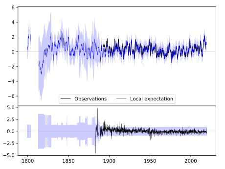
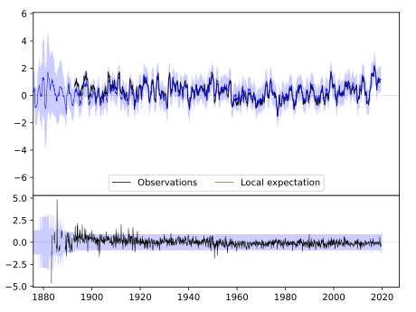
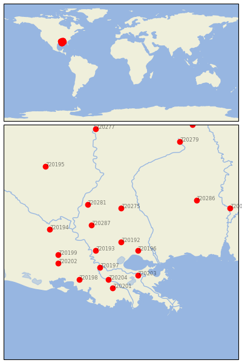

AMITE [USA]


| Neighbour | Name | Country | Distance | Lon/Lat | Years |
|---|
| 720192 | AMITE | USA | 0 | -90.5, 30.7 | 1883-2019 |
| 720196 | COVINGTON 4 NNW | USA | 44 | -90.1, 30.5 | 1893-2019 |
| 720193 | BATON ROUGE METRO AP | USA | 61 | -91.1, 30.5 | 1822-2019 |
| 720287 | WOODVILLE 4 ESE | USA | 80 | -91.2, 31.1 | 1892-2019 |
| 720197 | DONALDSONVILLE 4 SW | USA | 82 | -91.0, 30.1 | 1884-2019 |
| 720275 | BROOKHAVEN CITY | USA | 88 | -90.5, 31.5 | 1892-2019 |
| 720203 | NEW ORLEANS AUDUBON | USA | 96 | -90.1, 29.9 | 1888-2019 |
| 720204 | THIBODAUX 3 ESE | USA | 104 | -90.8, 29.8 | 1892-2019 |
| 720201 | HOUMA | USA | 123 | -90.7, 29.6 | 1888-2019 |
| 720281 | NATCHEZ | USA | 125 | -91.3, 31.6 | 1799-2019 |
| 720198 | FRANKLIN 3 NW | USA | 138 | -91.5, 29.8 | 1882-2019 |
| 720199 | GRAND COTEAU | USA | 147 | -92.0, 30.4 | 1888-2019 |
| 720202 | LAFAYETTE FCWOS | USA | 154 | -92.0, 30.2 | 1884-2019 |
| 720194 | BUNKIE | USA | 165 | -92.2, 31.0 | 1882-2019 |
| 720286 | WAYNESBORO 2 W | USA | 204 | -88.7, 31.7 | 1882-2019 |
| 720195 | CALHOUN RSCH STN | USA | 262 | -92.3, 32.5 | 1888-2019 |
| 720006 | THOMASVILLE | USA | 263 | -87.9, 31.5 | 1891-2019 |
| 720279 | LOUISVILLE | USA | 297 | -89.1, 33.1 | 1888-2019 |
| 720277 | GREENVILLE | USA | 305 | -91.1, 33.4 | 1884-2019 |
| 720284 | STATE UNIV | USA | 350 | -88.8, 33.5 | 1886-2019 |